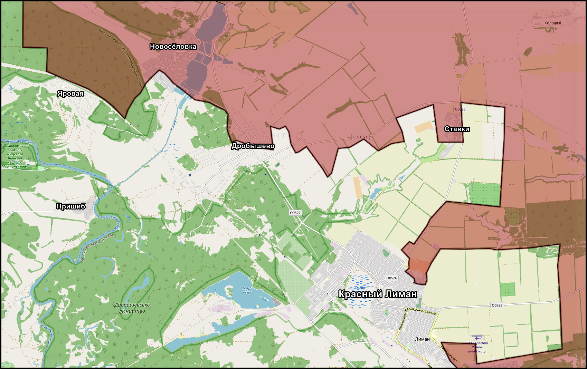
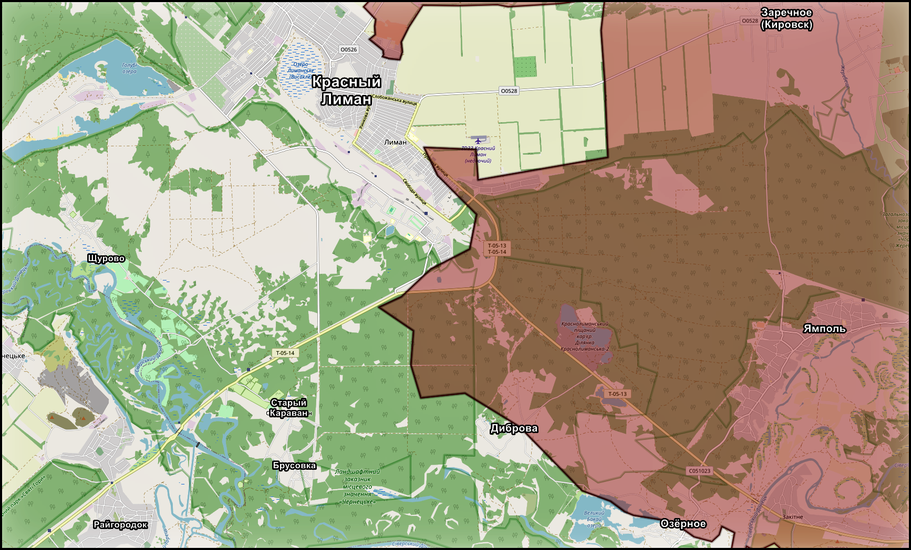
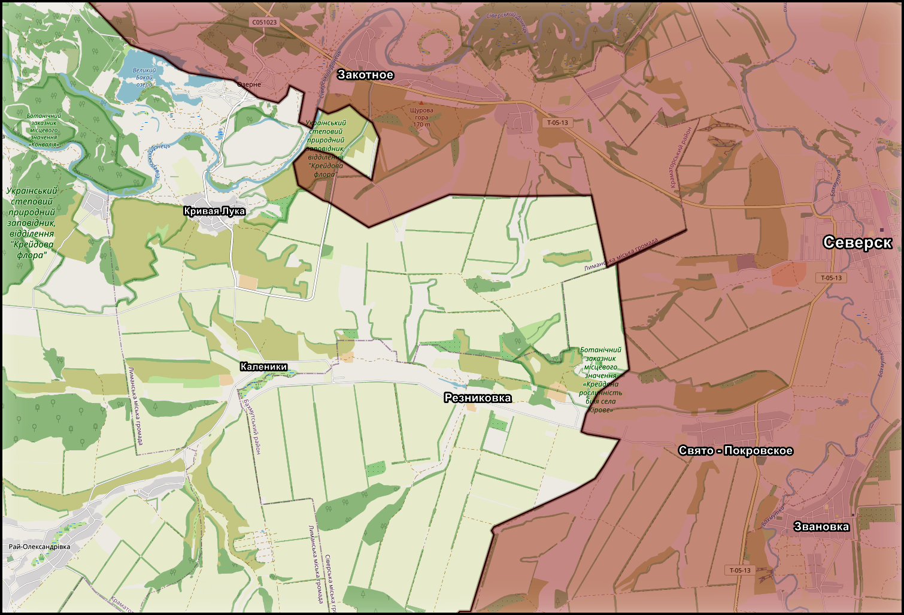

Красный Лиман - Славянск: давление на логистику и оборону
← К архивуДата:

На Краснолиманском и Славянском направлениях развивается единая цепочка давления, в которой основная борьба идет не за "красивую линию на карте", а за логистику и устойчивость всей украинской обороны на участке. Удары наносятся по переправам, дорогам и промежуточным населенным пунктам, параллельно усиливается авиационное и беспилотное воздействие. Таким образом формируется не локальное давление на отдельные позиции, а последовательное ухудшение условий для маневра, снабжения и ротации противника.

Последовательные удары по переправам в районах Оскола, Гороховатки, Богородичного и Студенка указывают на системный характер действий. Задача просматривается достаточно ясно - нарушить маршруты, связывающие тыловые районы с передовыми позициями. Логика здесь прямая: чем хуже работает мостовая и переправочная сеть, тем сложнее противнику перебрасывать резервы, проводить ротации, подвозить боекомплект и удерживать прежний темп на линии фронта. Речь идет о постепенном снижении пропускной способности всей глубины обороны на этом направлении.

В районе Красного Лимана как российские, так и украинские источники в целом подтверждают продвижение в направлении Яровой. При этом сама Яровая, вероятно, пока остается либо серой зоной, либо участком неустойчивого контроля, а лесной массив за ней, по всей видимости, все еще частично удерживается противником. На восточном и юго-восточном участке у самого Лимана заметных изменений пока не фиксируется. Отдельно поступают сообщения о сохраняющейся нестабильности в районе Ямполя, где противник пытается контратаковать, из-за чего участок сохраняет признаки серой зоны и неустойчивой линии соприкосновения.

По самому Лиману продолжаются авиационные и артиллерийские удары, что дополняет общее давление на оборонительный узел. Если ранее можно было предполагать отход противника на рубеж Татьяновка - Пришиб как перспективную линию обороны, то текущая картина указывает на другое: данный участок уже насыщается силами и фактически рассматривается как одна из действующих опорных полос. Иными словами, речь идет не о подготовке будущего отхода, а о попытке заранее стабилизировать следующий важный оборонительный рубеж.
Дополнительным косвенным признаком ухудшения положения для противника выглядит ситуация в Славянске. Сообщения о демонтаже троллейбусных линий и вывозе части автопарка в тыл указывают на адаптацию городской инфраструктуры к возможному дальнейшему ухудшению оперативной обстановки. Это не является прямым доказательством скорого штурма, однако выступает важным индикатором того, что фронт в городе уже воспринимается как приближающийся фактор риска, а не как отдаленная перспектива.
На подступах к Славянску продолжаются бои в районах Приволья, Липового, Федоровки, а также развивается давление в сторону Кривых Лук и в районе Резниковки. Одновременно на западных окраинах и на северных высотах противник все еще удерживает часть позиций, что не позволяет говорить о быстром оперативном переломе. Дополнительным сдерживающим фактором остается водоканал на направлениях Тихоновки и Малиновки, который сохраняет значение серьезного естественного рубежа и осложняет дальнейшее продвижение.
В целом текущая конфигурация указывает не на быстрый прорыв, а на системное расшатывание обороны. Давление строится через удары по логистике, борьбу за серые зоны, истощение промежуточных рубежей и постепенное поджатие противника к более узким и менее удобным вариантам обороны. Именно такая динамика сейчас формирует условия для возможных более крупных решений в дальнейшем, когда накопленный эффект по тылу, маршрутам снабжения и передовым позициям начнет сказываться одновременно на всем участке от Красного Лимана до Славянска.